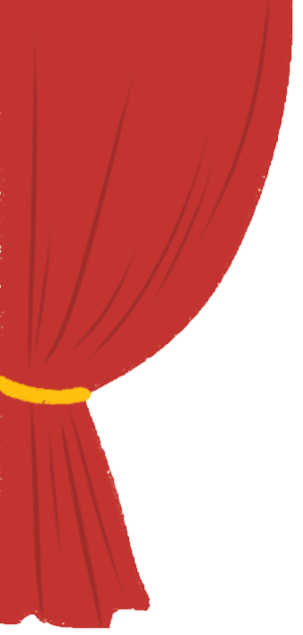
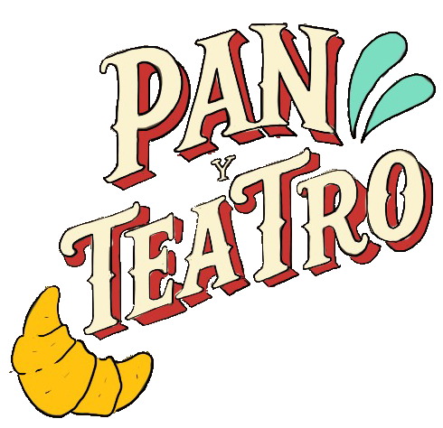
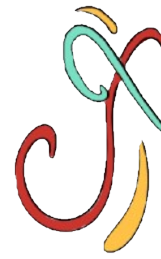
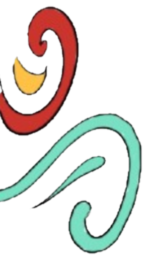

Somos una asociación hecha para incentivar y reivindicar el arte callejero de la ciudad de Buenos Aires. Te invitamos a recorrer la historia y evolución del arte porteño a través de sus diferentes escenarios.
